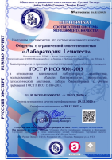
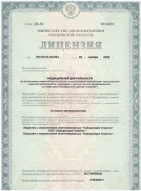
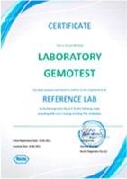
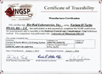
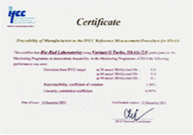

Ліцензії і сертифікати «ЛораМедікал»
Гарантія якості
Система менеджменту якості ТОВ «Лабораторія Гемотест» сертифікована і відповідає вимогам ДСТУ ISO 9001-2015 з урахуванням вимог ДСТУ ISO 15189-2015.
Статус дії сертифіката № RUSEXP-RU-000130 від 29.12.2020 р можна перевірити на сайті органу з сертифікації ТОВ «Русский Експерт» або відсканувати QR-код, вказаний на сертифікаті.

Гарантія якості (міжнародна система якості ISO)
ТОВ «Лабораторія Гемотест» має ліцензію на здійснення медичної діяльності в галузі клінічної лабораторної діагностики та на здійснення амбулаторно-поліклінічної медичної допомоги.

Сертифікат відповідності вимог референсной лабораторії Roche Diagnostics Rus по ПЛР-ДОСЛІДЖЕНЬ на SARS-CoV-2

Сертифікат стандартизованого методу визначення «глікірованній гемоглобіну HbA1» (National Glycohemoglobin Standardizatin Programm, NGSP)

Сертифікат Міжнародної Федерации КЛІНІЧНОЇ ХІМІЇ IFCC (International Federation of Clinical Chemistry) «Глікозільованій гемоглобін HbA1 »

Контролюючі органи
Федеральна служба з нагляду в сфері захисту прав споживачів і благополуччя людини «Росспоживнагляд»
127994, Москва, Вадковський провулок, 18, стр. 5, 7 8 (499) 973-26-90
127994, Москва, Вадковський провулок, 18, стр. 5, 7 8 (499) 973-26-90